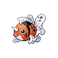

Назад
Сикинг
Сикинг — Покемон 1 поколения под номером 119 в Покедекс. Обитает он в регионе Канто и относится к Водному типу. Это последняя стадия эволюции Покемона Голдин. Осенью можно увидеть самцов Сикингов, исполняющих брачные танцы в руслах рек, привлекающие самок. В течение всего сезона окрас этого Покемона приобретает самые красивые оттенки.
Тип:
Водяной
Эволюция

# 119 Сикинг
Финальная стадия